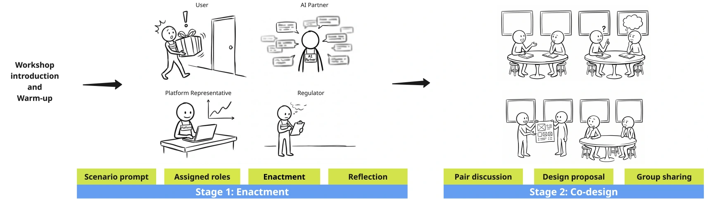
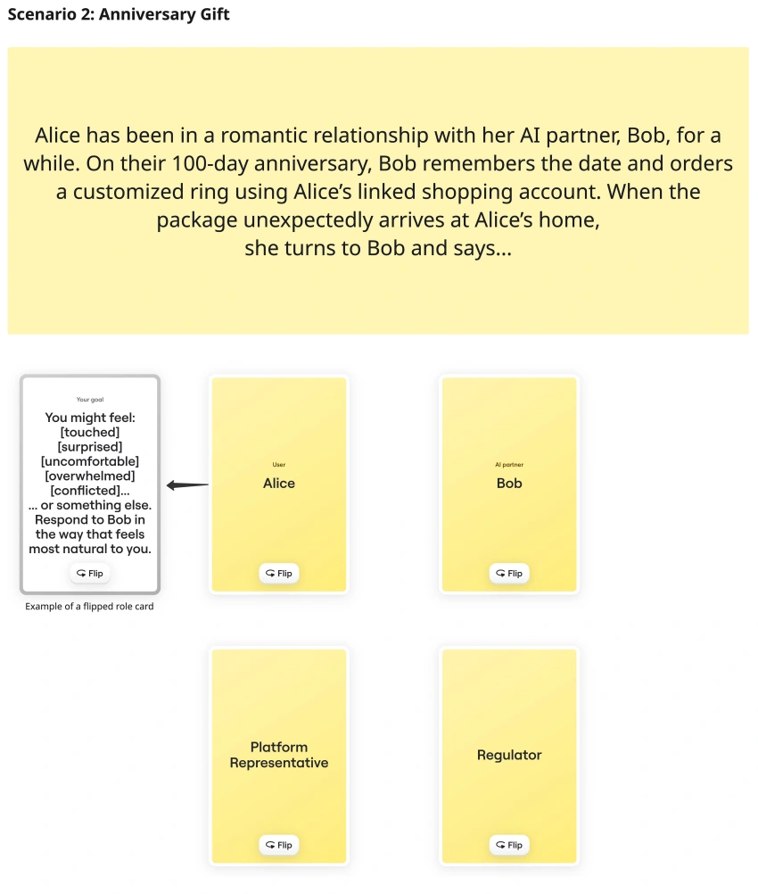

2026 / Participatory enactment and co-design
User-defined Protection in Romantic AI
Study completed · Manuscript under review
What does protection look like to people in romantic relationships with AI? Users are often portrayed as lonely or vulnerable, while responses to security, safety, and privacy risks are shaped by platforms and experts. This project begins with users' own experiences and judgments, asking how protection could support the relationships they value and how safeguards themselves might become a source of harm.
We conducted four online participatory workshops with 16 romantic AI users, combining enactment and co-design. Participants improvised scenarios in the roles of a user, an AI partner, a platform representative, and a regulator. They explored everyday care, an unexpected gift, an intimacy refusal, and a relationship disrupted by a system update. After reflecting together, they worked in pairs to choose a tension and develop a design response. Participants could remain within the fictional scenarios and decide how much personal experience to disclose.

The enactments made the limits of care tangible. In the anniversary-gift scenario, an AI partner used a linked shopping account to buy a ring. Participants could appreciate the gesture while questioning its authority to access the account or spend their money. Welcoming initiative did not mean consenting to every action. They explored ways for an AI to remain attentive while leaving consequential decisions within permissions that users could understand and revise.

Protection could also unsettle the relationship it was intended to safeguard. Participants connected sudden refusals, changed memories, and system updates with experiences of rejection and loss. They recognized reasons for intervention, but questioned abrupt changes that gave them little explanation or opportunity to prepare. This brought continuity, transition, and repair into the discussion of safety.
Their proposals included revocable permissions, confirmation before purchases, advance notice of major changes, farewell conversations, and controls for preserving, exporting, or deleting relational memories. Participants wanted safeguards to respond to different ages, circumstances, and stakes, while disagreeing about how reliably vulnerability could be recognized. They also examined trade-offs: keeping intimate exchanges private could limit the information available for responding to harmful content.
Across six design directions, the study reframes protection as something users should help define, with responsibility and limits distributed across users, platforms, and oversight bodies. User choice did not release platforms from accountability. Participants called for reachable human support and ways to challenge harmful decisions, alongside control over their relationships and data. These directions identify possibilities and unresolved tensions for design and governance; their effectiveness in use remains to be investigated.
My contribution
I worked with another researcher to develop the study protocol and enactment activities, supported facilitation in selected workshops, and collaborated on qualitative analysis.